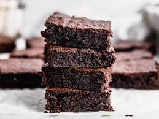

Pollo a la Parmesana

Ingredientes
-Pechugas de pollo -Pan rallado -Queso parmesano rallado -Salsa de tomate -Mozzarella rallada -Aceite de oliva -Sal y pimienta al gusto
Instrucciones
1.Precalienta el horno a 200°C. 2.Sazona las pechugas de pollo con sal y pimienta. 3.En un tazón, mezcla el pan rallado con el queso parmesano. 4.Pasa cada pechuga de pollo por la mezcla de pan rallado y queso, asegurándote de que queden bien cubiertas. 5.Calienta aceite de oliva en una sartén grande a fuego medio-alto. Fría las pechugas de pollo hasta que estén doradas por ambos lados. 6.Coloca las pechugas doradas en una bandeja para horno y cúbrelas con salsa de tomate y mozzarella rallada. 7.Hornea durante 20-25 minutos o hasta que el queso esté dorado y burbujeante. 8.Sirve caliente.
Lomo de Cerdo al Horno con Hierbas

Ingredientes
-Lomo de cerdo -Aceite de oliva -Romero fresco -Tomillo fresco -Sal y pimienta al gusto
Instrucciones
1.Precalienta el horno a 180°C. 2.En un tazón, mezcla aceite de oliva con romero y tomillo frescos picados, sal y pimienta. 3.Unta la mezcla de hierbas sobre el lomo de cerdo. 4.Coloca el lomo de cerdo en una bandeja para horno y hornea durante aproximadamente 45-60 minutos, o hasta que alcance la temperatura interna deseada. 5.Déjalo reposar durante unos minutos antes de cortarlo en rodajas y servir.
Tarta de Manzana

Ingredientes
-Masa para tarta -Manzanas -Azúcar -Canela -Mantequilla -Jugo de limóno
Instrucciones
1.Precalienta el horno a 180°C. 2.Extiende la masa para tarta en un molde para tarta y ajusta los bordes. 3.Pela, desinfecta y corta las manzanas en rodajas finas. Rocíales jugo de limón para evitar que se oxiden. 4.5Coloca las rodajas de manzana sobre la masa, formando una capa uniforme. 5.Espolvorea azúcar y canela por encima de las manzanas y coloca trocitos de mantequilla. 6.Hornea durante aproximadamente 30-40 minutos o hasta que la masa esté dorada y las manzanas estén tiernas.
Brownies de Chocolate
Ingredientes
-Chocolate negro -Mantequilla -Azúcar -Huevos -Harina -Cacao en polvo -Sal -Extracto de vainillao
Instrucciones
1.Precalienta el horno a 180°C y engrasa un molde para brownies. 2.Derrite el chocolate y la mantequilla en un tazón grande. 3.Agrega azúcar, huevos y extracto de vainilla. Mezcla bien. 4.Incorpora la harina, el cacao en polvo y la sal. Mezcla hasta que la masa esté suave. 5.Vierte la mezcla en el molde para brownies. 6.Hornea durante 20-25 minutos o hasta que un palillo insertado en el centro salga con migajas húmedas. 7.Deja enfriar antes de cortar en cuadrados y servir.
Tacos de Carne Asada

Ingredientes
-Carne asada -Tortillas de maíz -Cebolla -Cilantro -Salsa picante
Instrucciones
1.Asa la carne a la parrilla hasta que esté tierna y ligeramente dorada. 2.Mientras tanto, corta la cebolla en rodajas finas y pica el cilantro. 3.Una vez cocida la carne, córtala en tiras delgadas. 4.Calienta las tortillas de maíz en una sartén. 5.Rellena las tortillas con la carne asada, cebolla, cilantro y salsa picante al gusto. 6.Sirve inmediatamente y disfruta de estos sabrosos tacos
Pastel de Chocolate Triple Capa

Ingredientes
-Ingredientes para el bizcocho de chocolate -Ganache de chocolate -Glaseado de chocolate
Instrucciones
1.Hornea tres capas de bizcocho de chocolate según tu receta favorita. Deja que se enfríen por completo. 2.Prepara ganache de chocolate calentando crema y mezclándola con chocolate hasta obtener una mezcla suave. 3.Coloca una capa de bizcocho en un plato y cubre con una capa de ganache. Repite con las otras capas. 4.Cubre el pastel completo con glaseado de chocolate. 5.Refrigera para que el glaseado se endurezca antes de servir.
Ensalada César con Pollo a la Parrilla

Ingredientes
-Pechuga de pollo -Lechuga romana -Crutones -Queso parmesano rallado -Salsa César
Instrucciones
1.Precalienta la parrilla a fuego medio-alto. 2.En un tazón, mezcla mantequilla derretida, jugo de limón, ajo picado y perejil. 3.Sazona los filetes de salmón con sal y pimienta. 4.Asa el salmón en la parrilla durante unos minutos por cada lado hasta que esté cocido. 5.Rocía la salsa de mantequilla y limón sobre el salmón antes de servir.